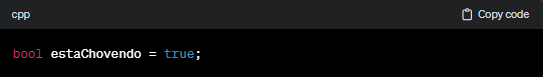

Inteiros (int): Representam números inteiros, positivos ou negativos, sem parte fracionária. Exemplos de inteiros são 1, -5, 1000.
Exemplo em C:

Ponto Flutuante (float ou double): Representam números reais que podem ter uma parte fracionária. Double é geralmente usado para valores de ponto flutuante com mais precisão.
Exemplo em Python:

Caracteres (char): Representam caracteres individuais, como letras, números ou símbolos.
Exemplo em Java:

Cadeias de Caracteres (String): Representam sequências de caracteres. Muitas linguagens de programação têm um tipo de dados específico para strings.
Exemplo em JavaScript:

Booleanos (bool): Representam valores lógicos verdadeiro ou falso.
Exemplo em C++:

Listas/Arrays: São coleções ordenadas de elementos do mesmo tipo. Os elementos podem ser acessados por meio de índices.
Exemplo em Python:

Registros/Estruturas (Struct ou Record): Permitem agrupar diferentes tipos de dados sob uma única estrutura.
Exemplo em C#:

Apontadores (Pointer): Armazenam endereços de memória, permitindo manipulação direta da memória.
Exemplo em C:

Esses são alguns dos tipos de dados fundamentais, mas muitas linguagens de programação oferecem tipos mais avançados e estruturas de dados complexas para lidar com situações específicas. A escolha do tipo de dados certo é crucial para o desenvolvimento eficiente e sem erros de algoritmos e programas.